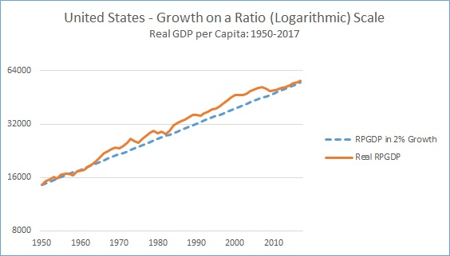

Difference: the fundamental difference is that data in Chapter 7 cares about the the frequency the data is occured by using the distribution, while the data in Chapter 8 cares about how the data changes over time by using different sorts of techniques.
Three Visualizations Techniques
- Time Series Line Charts
- Visualizing Indexes:
- Communicating Change
Pros
Easy to show the trend over time.
Easy to show the relationship with the continuous data.
Cons
Can only use the historical data
Not beautiful if there are many lines.
Cannot detect other effects on the data.
Not accurate as the sample size or other properities of each year might not be the same.
Example: Although it shows the overall trend of the GDP Per Capita, it tells you nothing else.

Pros
Useful for us to do comparison, and it is a deeper analysis than just looking at the trend. Thus, more applicable and pratical to real life.
There are many ways to do the comparison such as the zero-based indexd chart, log, etc.
Cons
Like the line charts, can only tell generall stories, and it sometimes can be misleading.
Example:This one is better because audience can not only see the trend, but also can figure out the growth rate by comparing the slope to the blue line as it is in a ratio (logarithmic scale).

Pros
The change can be displayed even on a line chart (like positive or negative).
Beautiful but also easy to look at because for example, the different colors means differently.
Can show many different samples at the same time.
Cons
Sometimes can get too messive (not good when we have too many samples)
Sometimes can be not that representative. For example, color red is for 5% to 10%, and blue for over 10%, but the one sample is 9.999%. It will be colored red, even though it get really closed to blue.